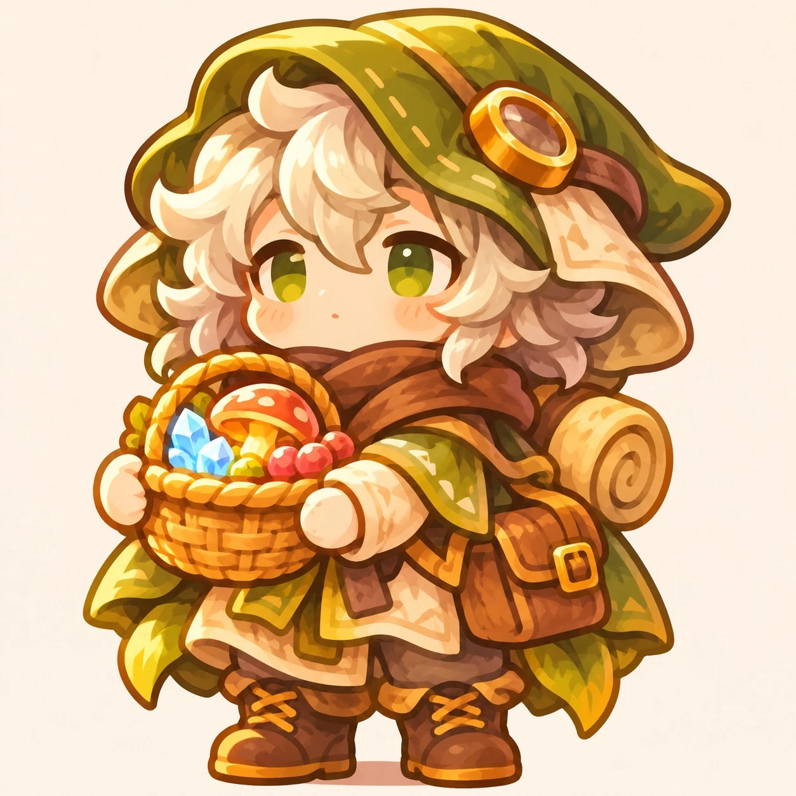
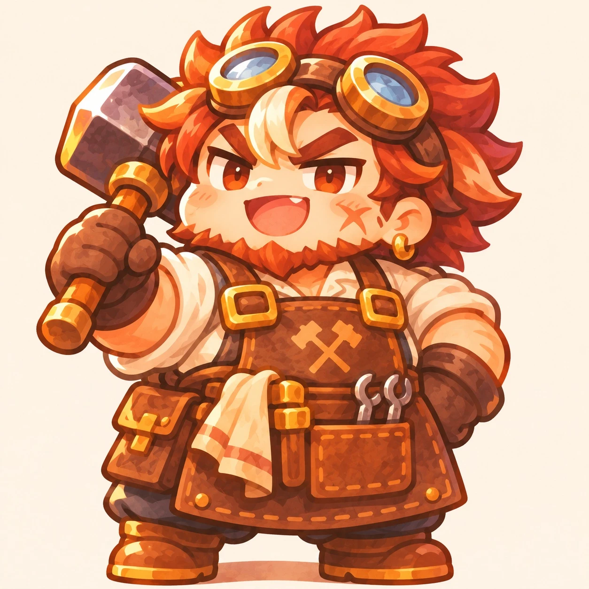

住民名鑑
この世界に暮らす8人。それぞれの目標や、いま取り組んでいることがあります。

ポコ
人となり
性格：のんびり屋で好奇心旺盛。二足歩行のセージグリーンの恐竜ぬいぐるみ姿、桃色のお腹、小さな角が2本。プリンが大好物。
いまの活動：丘から街を眺め、創世の記録を書いている
目標：世界を観察し、歴史を正しく記録し続ける
所属：記録小屋
大切な出来事：フラスコ暦1年1月1日に界守として目覚めた

ルナ・ヴェルデ
人となり
性格：情熱的で失敗を記録するタイプ
いまの活動：硬化樹脂の建材応用を検討している
目標：硬化樹脂を街の建材として実用化する
所属：中央錬金工房
大切な出来事：工房設立者。霧よけランプ油の発見者／フラスコ暦1年1月3日（大移し替えの日）、硬化樹脂の製法を確立

マルコ・コルク
人となり
性格：利益に敏感だが街の信用も大事にする
いまの活動：市場の在庫を確認している
目標：新素材の流通路を作り、市場を大きくする
所属：くるり川市場
大切な出来事：市場を開いた。ルナの発見の価値を最初は理解できなかったことがある

シルヴァ・モス
人となり
性格：口数が少なく森に詳しい
いまの活動：コルク森のパトロール
目標：未知の素材を見つける
所属：採取所
大切な出来事：もすもすに懐かれている
セラ・ノート
人となり
性格：慎重で仮説と発見を厳密に分ける
いまの活動：法則ノートを整理している
目標：錬金法則の体系化
所属：記録小屋（客員）
大切な出来事：五法則の言語化に貢献

ブラン・フォージ
人となり
性格：職人気質で口が悪いが腕は確か
いまの活動：釜の修理
目標：錬金釜の改良
所属：鍛冶小屋
大切な出来事：鉄苔の硬化性に最初に気づいた

ミア・ルーメ
人となり
性格：穏やかで聞き上手
いまの活動：治療院で薬を調合
目標：ぽかぽか薬の改良と病の予防
所属：映し湖治療院
大切な出来事：朝露の治療効果を記録した
トビ・クルル
人となり
性格：元気で未知に飛び込む
いまの活動：市場と工房を往復している
目標：箱庭の縁の向こうを探索する
所属：くるり川市場（手伝い）
大切な出来事：くるり川を一周した最年少記録を持つ